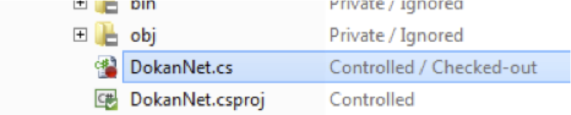

Checkout to edit
The checkout in Plastic SCM means:
- The file is made writable (even if it was not by default)
- Plastic knows the file has been modified (which is good to locate changes faster)

Figure 1: A file checked-out
As you can see, the file is now marked as checked-out by Plastic